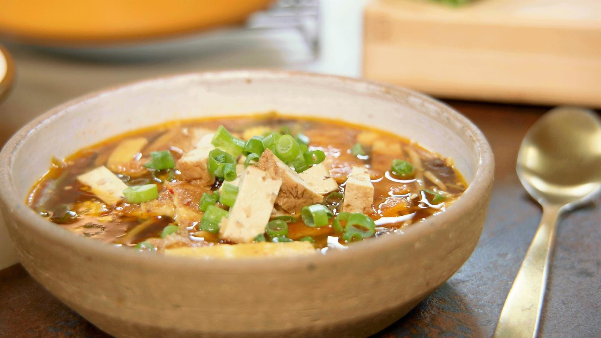

Chinese hot and sour soep
Ingrediënten
- Chinese hot and sour soep
- chocolade wafeltjes met banaan
- Rode poon met puree van wortelen

Ingrediënten
- water 2 l
- shiitakes 100 g
- arachideolie scheutjes
- ajuinen 2
- look 2 teentjes
- gember 40 g
- sambal 1 koffielepel
- sweet chilisaus 3 eetlepels
- sojasaus 6 eetlepels
- Ketjap Manis 4 eetlepels
- rijstazijn 1 dl
- eieren 4
- babymaïs 1 pakje
- sluimererwten 100 g
- sojascheuten 200 g
- tofu 1 pakje
- lente-uien 4 stengels
Bereiding
- 2 l water en 100 g shiitakes Breng een pot water aan de kook en giet het water op de shiitakes. Laat de paddenstoelen weken en zo krijgen we de bouillon voor de soep.
- scheutjes arachideolie2 ajuinen2 teentjes look40 g gember Laat een scheutje arachideolie heet worden in een pot. Snijd de uien in slierten en stoof ze aan in de olie, plet de look en rasp de gember erbij.
- 1 koffielepel sambal3 eetlepels sweet chilisaus6 eetlepels sojasaus4 eetlepels Ketjap Manis1 dl rijstazijn
Voeg er vervolgens de sweet chili, de sambal, de sojasaus, de ketjap manis en de rijstazijn aan toe en breng de basis aan de kook.
- Giet de bouillon van de geweekte paddenstoelen bij de soep en breng aan de kook.
- 4 eieren Laat wat arachideolie heet worden in een pan. Breek de eieren in een kom en klop ze los. Breng het eimengsel op smaak met wat sojasaus en een toefje sambal.
- Giet het eimengsel in de pan met olie en bak een dunne omelet.
- 1 pakje babymaïs100 g sluimererwten200 g sojascheuten Snijd de groentjes voor bij de soep: de sluimererwten en de geweekte shiitake’s in reepjes, de baby maïs in ringetjes. Schep de groenten samen met sojascheuten nadien in de soep.
- 1 pakje tofu Snijd de tofu in blokjes en de omelet in reepjes. Breng alles nog eens kort aan de kook en serveer.
- 4 stengels lente-uien Werk af met wat fijngesneden lente-ui, blokjes tofu en reepjes omelet.